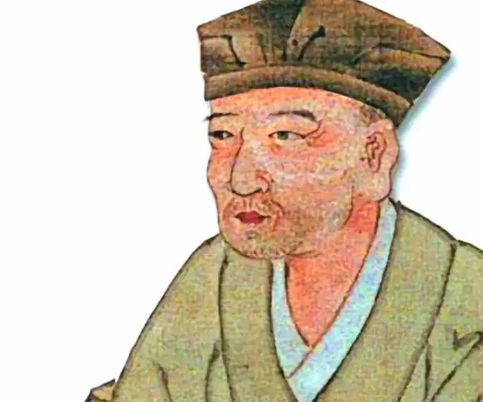

МАЦУО БАСЬО
(1644-1694)
Японська поезія XVII сторіччя, як це було й раніше у переломні епохи, відігравала провідну роль у формуванні нового мистецтва. Головне, що поезія в цю епоху була масовим видом мистецтва; вірші читали, вчили напам'ять. На перший план вийшли комічні жанри поезії, величезним успіхом користувався жанр хокку (дотепність, жарт). У кінці хайянської епохи строфи танка почали об'єднувати у довгі ланцюги. Поступово виникли складні правила, народилась нова літературна форма — ренга (нанизування строфи). Для складання ренги збирались поетичні гуртки, строфи складались почергово. Першу строфу (хокку) доручали кращому поету, а всього строф могло бути 36 (касен) або сто (хякуін). Ренга — це сюїта з несподіваним поворотом сюжету, котрий немов викреслює зигзаги. Жорсткі правила обмежували поета, прописуючи йому, у котрій за порядком строф має виникнути образ місяця, а в котрій не можна згадувати богів і будд. Одна тема розвивалась зазвичай упродовж трьох строф. Хокку мало бути перейняте настроями, навіяними певними порами року, в ньому була заборонена тема кохання й панував пейзаж. З'явилися збірки хокку. Воно поступово відділялось від ренги і виокремилося в самостійний жанр — значна подія в японській літературі. Саме хокку стало удачливим суперником танки. Городянам нелегко було засвоювати правила ренги. З'явились свого роду літературні цехи. Професійний майстер на чолі групи учнів створював свою школу з особливими прийомами і технічними засобами. Ці уроки давали йому кошти на прожиток. Найбільш відомими в XVII сторіччі були поетичні школи Теймон і Данрін. Школа Теймон відрізнялась сухим академізмом, а школа Данрін цінувала свіжість, експромт, швидкість; за один день деякі поети могли створити тисячі строф, вірші набували легкості, але не глибини, хоча з-поміж них зустрічались справжні поетичні знахідки. Однак Басьо засуджував надто велику поспішність і недбалість подібних творів. В епоху Генроку мистецтво хокку досягло повної зрілості й високої досконалості. Видатний національний поет Басьо посів в історії японської літератури таке ж почесне місце, як Петрарка в Італії. Він створив по-справжньому нову поезію, дзеркало свого часу, наділивши її немеркнучою красою, глибиною думки і почуттів. Басьо заснував школу талановитих і відданих йому послідовників. За свідченням сучасників, він був людиною неабиякої чарівності й моральних чеснот, справжнім подвижником мистецтва. У наш час вірші Басьо перекладені багатьма мовами. Дослідники скрупульозно простежили весь його нелегкий і довгий творчий шлях. Басьо народився в 1644 р. у містечку старовинної провінції Іга, що знана своєю мальовничістю. Батько його, із самурайського роду був учителем каліграфії — мистецтва, яке в Японії дуже цінували. Справжнє ім'я поета — Мацуо Мунефуса. Басьо — літературний псевдонім. З юних років він полюбив поезію. Тодо Иоситада, майже його ровесник, син власника замку Уено, теж захоплювався поезією хокку. Він опікувався Басьо й нерідко посилав його до Кіото, де Басьо вивчав мистецтво хайкай під керівництвом Кітамура Кігіна. У 1664 р. відбувся поетичний дебют Басьо: в одній з антологій були опубліковані два його вірші. Вони на той час ще не відзначились оригінальністю. Старанний учень школи Теймон пише з цитатами зі стародавніх віршів, знижених до пародії. Однак розуміння основ віршування хокку було першою і необхідною сходинкою до майбутньої майстерності. У 1666 р. Иоситада раптово помер. Басьо втратив друга й захисника. У князівському замку він був більше непотрібний. Басьо видрукував збірку віршів "Каїої" ("Покриття з черепашок") і з цим маленьким томиком, сповнений честолюбних сподівань, подався туди, де кипіло літературне життя. Залишивши рідний дім, він став бідним городянином. Але в Едо невідомому поету важко було домогтися успіху. Він улаштувався на службу у відомство водопостачання, але незабаром залишив цю посаду. Якийсь час він мав намір піти в монастир. У 1677 р. Басьо став професійним учителем поезії, але його учні були небагаті. Лише один з них, Сампу, син багатого купця, зміг по-справжньому допомогти своєму наставнику. Він подарував Басьо маленький будиночок біля невеликого ставка, на березі його були висаджені бананові пальми (басьо). Будиночок став називатися "Банановою обителлю" (Басьо-ан). Ось тоді поет і взяв псевдонім Басьо. У віршах, створених на початку 80-х років, Басьо любив відтворювати улюблену картину: свою хатину й навколишній пейзаж: маленький ставок, берег ріки Суміда, що поріс очеретом Басьо відчував себе міським бідняком. Коштами на життя були скромні приношення учнів, часом удавалося продати каліграфічні написи. Далеко не відразу дійшов Басьо висновку, що саме так має жити справжній поет. Убогість стала символом духовної незалежності. Басьо малює у своїх віршах ідеальний образ поета —філософа, байдужого до життєвих благ. Найважче було знайти свій шляху мистецтві, створити нове, неповторне. Спливло двадцять років невпинних пошуків і спроб з часу першої публікації юнацьких віршів. Тільки у сорок років Басьо створив свій знаменитий стиль сьофу (стиль Басьо). В юнацькі роки, відвідуючи Кіото, Басьо писав вірші під впливом школи Теймон, а після переїзду в Едо він зблизився з поетами школи Данрін. Але відчувши ідейну й тематичну обмеженість обох шкіл хокку, що часто перетворювали поезію на словесну гру, він на початку 80-х років звернувся до китайської поезії танської епохи. У ній знайшов він глибоку концепцію світобудови й того місця, що посідає людина як поет і мислитель, у розумінні високої місії поета. Особливо цінував Басьо великих поетів Лі Бо і Ду Фу. Глибоко вивчав Басьо і лаоських філософів Лао-цзи і Чжуан-цзи. Даосизм за своїм духом близький до дзен-буддизму, котрий чимало запозичив з нього. Басьо став вивчати дзен-буддизм під керівництвом вмілих наставників. Навчання дзен сильно вплинуло на японське мистецтво, зокрема й на творчість Басьо. Для цього в японській національній поезії здавна склалися передумови: любов до майже аскетичної стислості, коли слова замовкають, а почуття ще говорять (йодзьо); усвідомлення злиття людини з природою в круговерті різних пір року; сум (у багатому спектрі відтінків) від того, що краса (вишневих квітів, кленового листя, любові і юності) така недовговічна. У 1680 р. Басьо створив перший варіант знаменитого в історії японської поезії вірша: На голій гілці Ворон сидить самотньо. Осінній вечір. До роботи над цим віршем поет повертався упродовж кількох років, поки не створив остаточний варіант. Лише це одне свідчить про те, як завзято Басьо працював над кожним словом. Тривалі роки пошуків скінчилися. Басьо знайшов свій шлях у мистецтві. Вірш схожий на монохромний малюнок тушшю (сумі-е). Нічого зайвого, усе просто, але за допомогою кількох деталей створена картина осені. Відчувається відсутність вітру, природа немов завмерла в смутній застиглості. Поетичний образ, здавалося б, ледве накреслений, але має велику глибину, і водночас гранично конкретний: поет зобразив реальний пейзаж і через нього — свій щиросердий стан. Не тільки про самотність ворона говорить він, але й про своє власне. У хокку уяві читача полишено великий простір. Читач покликаний до співтворчості, до співпереживання. Разом з поетом він може відчувати сум, навіяний осінньою природою, чи розділити з ним глибоко особисте почуття самотності, може проникнутись споглядальним настроєм і відчути себе злитим з таємницями природи. Хокку мов би відкриває внутрішній зір, прихований у серці кожної людини, і тоді у малому вона зможе побачити велике. Хокку прийнято було читати декілька разів підряд, щоб глибоко замислитись. Поетичний образ Басьо не можна звести лише до метафізичного тлумачення. Хокку Басьо — зупинив і закріпив у поезії вічно живий момент буття. Для любителя поезії не обов'язково шукати в кожнім хокку Басьо прихований символічний зміст. Басьо не створив трактатів про поезію. Його поетика виражена у творчості. Світогляд і поетика Басьо розвивалися в протиріччях, міняючись у міру духовного зростання поета. Це був динамічний процес. Басьо любив поєднувати високе з простим. В останні роки життя Басьо виголосив новий провідний принцип поетики — карумі (легкість). Пізні вірші Басьо аж ніяк не дрібні, вони говорять про прості людські справи й почуття. У побутових картинках є добрий гумор, а не глузування, тепле співчуття до людей. Поезія Басьо — не лише лірика природи, межі її рухливі, вона вміщає в себе світ людей того часу. Головні герої його віршів — поети, селяни, рибалки, мандрівники на дорогах. Учні Басьо склали сім збірників віршів свого вчителя і власних: "Зимові дні" ("Фую-но хі", 1684); "Весняні дні" ("Хару-но хі", 1686); "Затихле поле" ("Но-дзарасі", 1689) з передмовою Басьо, де він указав, що саме в цій збірці з найбільшою силою виражене почуття сабі; "Гарбуз-горлянка" ("Хісаго", 1690); "Солом'яний плащ мавпи" ("Саруміно", 1691). Пам'яткою нового стилю (карумі) є дві останніх збірки Басьо: "Мішок вугілля" ("Сумідавара", 1694) і "Солом'яний плащ мавпи, книга друга" ("Дзоку Саруміно", книга вийшла вже після смерті Басьо, у 1698р.). Поезія Басьо — літопис його життя. Значна частина віршів Басьо — плоди його роздумів у дорозі. Багато віршів присвячені померлим друзям. Є вірші на випадок: у похвалу гостинному хазяїну, на подяку за присланий подарунок, підписи до картин. Узимку 1682 року пожежа знищила значну частину Едо, згоріла й "Бананова обитель" Басьо. Це, як він сам говорить, дало остаточний поштовх для того, щоб вирушити мандрувати. У серпні 1684 p. він залишив Едо в супроводі одного зі своїх учнів, щоб відвідати свою батьківщину, своїх друзів, історичні й знамениті своєю мальовничістю місця Японії. Іноді він повертався до Едо, де друзі відбудували його "Бананову обитель", але незабаром його знову вабив вітер мандрів. їхав він на коні і йшов пішки у паперовому одязі бідняків, з дорожнім мішком за плечима, де лежали дві-три улюблені поетичні антології, свої записи та маленький гонг, у руках ціпок і чотки, на голові великий плетений капелюх. Зовні поет скидався на убого ченця. В усіх містах, де він зупинявся, довкола нього збиралися поети. Басьо створив п'ять дорожніх щоденників, написаних особливою ліричною прозою в чергуванні з віршами, своїми і чужими: "Кістки, що біліють у полі" ("Нодзарасі кіко", 1684-1685), "Мандрівка до Касіма" ("Касіма кіко", 1687), "Рукопис у дорожньому мішку" ("Оі-нокобумі", 1687-1688), "Мандрівки в Сарасіна" ("СараСіна кіко", 1688) і найвідоміший з його щоденників — "Стежками Півночі" ("Оку-но хосоміті", 1689). Старий поет сподівався ще продовжити свої мандрівки далеко на північ, де живуть айни, щоб побачити всю Японію, але смерть застала його в 1694 році у місті Осака, де він помер, оточений своїми учнями.